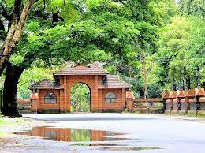
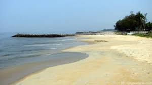
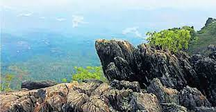

Kozhikode, also called Calicut, city, northern Kerala state, southwestern India. It is situated on the Malabar Coast, 414 miles (666 km) west-southwest of Chennai (Madras) by rail.
Kozhikode was once a famous cotton-weaving centre, and it is remembered as the place of origin of calico, to which it gave its name (i.e., Calicut). The place was an early focus for Arab traders, who first settled there in the 7th century. Vasco da Gama, the Portuguese discoverer of the sea route to India, reached Kozhikode in 1498. The Portuguese built a fortified trading post there in 1511, but it was abandoned in 1525.
An English expedition visited Kozhikode in 1615, but not until 1664 did the British East India Company found a trading post there. The French followed in 1698 and the Danes in 1752. Hyder Ali, the 18th-century Indian ruler and military commander of Mysore (now Karnataka state), captured the town in 1765 and destroyed it. In 1790 the British occupied Kozhikode, and it passed into their hands by treaty in 1792, when the inhabitants returned and rebuilt the city.

Famous Tourist Spots:
Kappad Beach

Kappad Beach has historically played an important role in the history of Kerala. On these shores, over 500 years ago in 1498, 170 men led by Vasco- da-Gama first stepped onto Kerala. The entire State, especially the Malabar Coast, would never be the same again.
A visit to Kozhikode is incomplete without a visit to this legendary site. The spice route flourished through this Beach. A walk in and around the place gives one an idea of itshistorical relevance. The rocks and small hills add to its charm. The nearby shacks are always stocked with excellent local delicacies and tea. Migratory birds can be spotted occasionally as well. Kappad Beach is a truly majestic destination, which will always hold an important place in our history.
Vayalada

Vayalada is a small Village/hamlet in Kozhikode District of Kerala. Vayalada hills is known as Malabar's Gavi. It is situated at a height of about 567 meters above sea level and 38kms away from Kozhikode city. The main attraction on Vayalada is the view from its top. From the top below the clouds we can see the green land sorounded by water. Dam view point is the main attraction in this place. An amazing View of peruvannamuzhi dam is possible from top of vayada dam view point. The viewpoint which gives you this natural treat is Mullanpara. The 2 km Offroad from Vayalada town to the parking is little bit adventures and from there the trecking starts. The 1.5 Kms trecking to the Kurishumala is a great experience. The cool air and the mist atracts touristers to Vayalada.